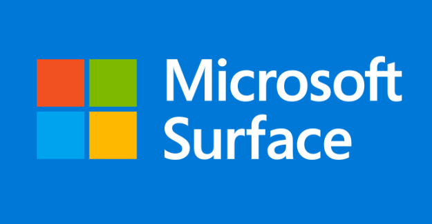
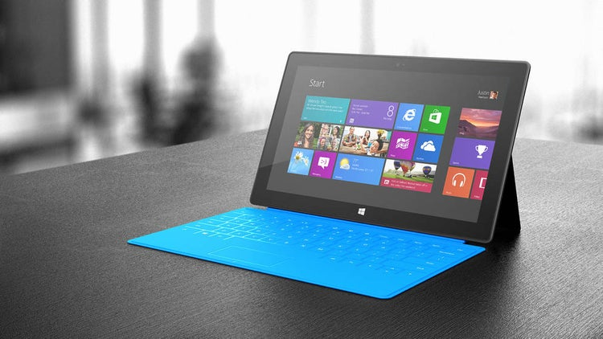

Windows Surface
Microsoft Surface es una serie de dispositivos de pantalla táctil (tabletas, foldables, computadoras portátiles y de escritorio y pizarras interactivas) diseñadas y comercializadas por Microsoft.
El lanzamiento de la primera versión de tabletas fue anunciado el 18 de junio de 2012, por el CEO de Microsoft Steve Ballmer en Los Ángeles.Los modelos más recientes son la Surface Pro 4 lanzada el 6 de octubre de 2015, y la Surface Book, lanzada el 6 de octubre de 2015. Estas tabletas destacan principalmente por su teclado extraíble y por el "kickstand" un soporte integrado que permite ajustar la pantalla a la altura deseada.

Y la última revolución Surface Book que revoluciona sus principios "la tablet que cambia tu laptop" presentada en Nueva York el día 6 de octubre de 2015 Que conmociona con su doble GPU incluido en el teclado y en su pantalla desprendible.
Aparte de la gama de tabletas también existe una pantalla táctil de grandes dimensiones llamada Surface Hub, este producto está enfocado principalmente al sector empresarial.
Historia
Fue anunciada el 18 de junio de 2012 por el CEO Steve Ballmer en Los Ángeles en una conferencia en Milk Studios. Surface fue el primer gran proyecto de Microsoft en integrar su sistema operativo Windows con su propio Hardware, además fue el primer PC distribuido en solitario por Microsoft.
La Surface RT fue lanzada al mismo tiempo que Windows 8, el 26 de octubre de 2012. La Surface Pro fue lanzada el 9 de febrero de 2013. Estos dispositivos en un principio estuvieron disponibles únicamente en tiendas de Microsoft tanto las físicas como en las online, posteriormente fueron distribuyéndose al resto superficies comerciales.
Steven Sinofsky, presidente en aquel momento de la división Windows y Windows Live, comentó que el precio seria comparable a las de otras tabletas y ultrabooks del momento. Más tarde Steven Ballmer explicó que el principal mercado del pc esta desde los 300$ a los 800 $, finalmente el 16 de octubre se anunció la Surface RT desde los 399$ el modelo más básico.

La Surface RT y la Surface Pro tuvieron unas ventas modestas que causaron pérdidas de hasta mil millones de dólares a Microsoft.
El 23 de septiembre de 2013 Microsoft anunció la Surface 2 y la Surface Pro 2, con mejoras en el soporte trasero y en los componentes internos. Estas fueron lanzadas el 22 de octubre de 2013, 4 días antes del lanzamiento de Windows 8.1. El 18 de marzo de 2014 se lanzó una versión de la Surface 2 con soporte para redes LTE.
El 20 de mayo de 2014 en un evento dedicado únicamente a la gama Surface se presentó la Surface Pro 3, con un gran rediseño del concepto. La pantalla pasaría de ser desde las 10,6 pulgadas (27 cm) a las 12 pulgadas (30 cm), también hubo mejoras en el soporte trasero, ahora con posición totalmente ajustable y en los componentes. La Surface Pro 3 llegó al mercado el 20 de junio de 2014.
El 30 de marzo de 2015, se anunció la Surface 3 tendría una pantalla más pequeña que la Surface Pro 3, 10.6 pulgadas, y sistema operativo Windows 8.1, no Windows RT. En esa misma presentación también se anunció que todas las Surface Pro y la Surface 3 serán actualizadas a Windows 10.
Dispositivos
La familia Surface cuenta con ocho líneas principales de dispositivos:
Surface Go
La línea Surface Go de tabletas híbridas, con accesorios de teclado desmontables opcionales, y lápiz ópticoopcional. El modelo más reciente, utiliza un procesador SoC Intel Pentium Gold 4415Y. En esta rama entra las tres primeras generaciones lanzadas al mercado con Windows 8 y 8.1, además de la Surface RT.
Surface Pro
Surface Pro es una línea de tabletas híbridas, con accesorios de teclado desmontables similares y opcionales y lápiz ópticoopcional. Los 2 últimos modelos son el Surface Pro 7,que tiene un procesador de la serie Intel Core de 10a generación, y el Surface Pro X, que tiene el Microsoft SQ1 ARM SoC (una versión personalizada del Snapdragon 8xc).
Surface Laptop
Surface Laptop, un portátil con una pantalla táctil no desmontable de 13,5 o 15 pulgadas. El dispositivo original ejecuta Windows 10 S de forma predeterminada; sin embargo, se puede actualizar a Windows 10 Pro. A partir del Surface Laptop 2, se utilizan las ediciones home y Pro regulares.
Surface Book
Surface Book, un portátil con una pantalla de tableta desmontable. La base es configurable con o sin gráficos discretos y una pantalla de tableta operable de forma independiente, en la que funciona el lápiz óptico opcional. El lápiz óptico se vende por separado del último modelo de Surface Book.
Surface Studio
Surface Studio, un escritorio todo en uno de 28 pulgadas que se ajusta en una tabla de dibujo digital con lápiz óptico y compatibilidad con Surface Dial en pantalla.
Surface Hub
Surface Hub, una pizarra digital interactiva con pantalla táctil diseñada para la colaboración. El 21 de enero de 2015, Microsoft presentó un nuevo producto, se trata de una pantalla táctil de grandes dimensiones llamada Microsoft Surface Hub. La Surface Hub está disponible en dos versiones una de 84 pulgadas (213 cm) con resolución 4K y 120 Hz de tasa de refresco. La otra versión son 55 pulgadas (140 cm) con resolución 1080p. Ambas versiones disponen de cámaras y micrófonos para permitir videollamadas y soporte para múltiples lápices digitales. La Surface Hub usa una versión modificada de Windows 10 como sistema operativo. Este dispositivo esta especialmente pensado para el uso en empresas y especialmente para usarse en presentaciones, conferencias o reuniones.
Surface Neo
Surface Neo, un próximo dispositivo de pantalla táctil de doble pantalla del que ambas pantallas son de 9" Pulgadas y se ejecutan en Windows 10X.
Surface Duo
Surface Duo, un próximo dispositivo de pantalla táctil de doble pantalla del que ambas pantallas son de 5,6 pulgadas y se puede utilizar como un teléfono que ejecuta Android.